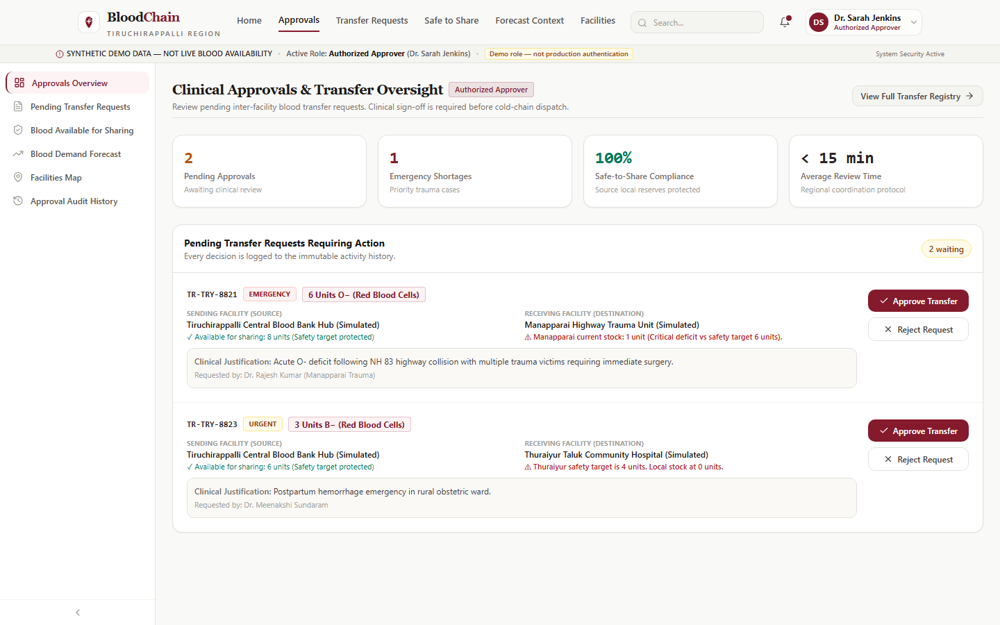
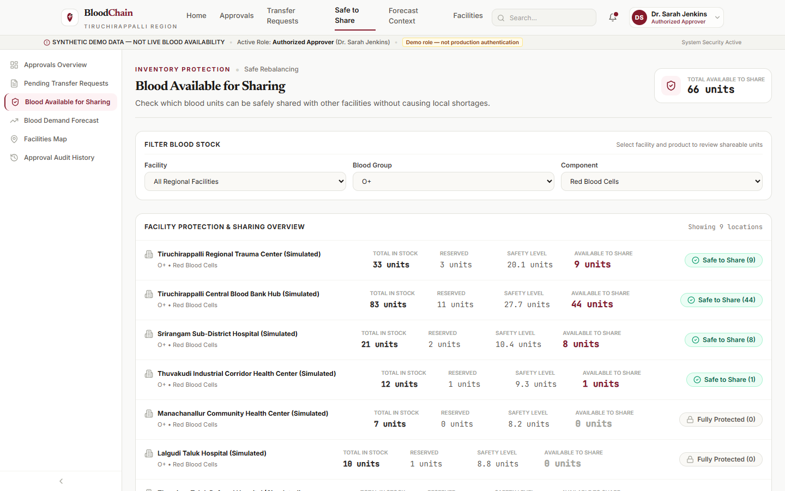
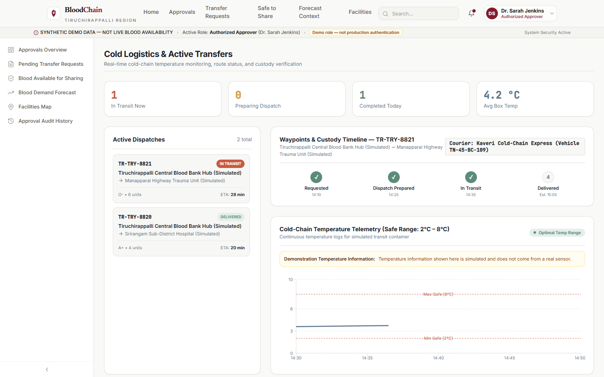
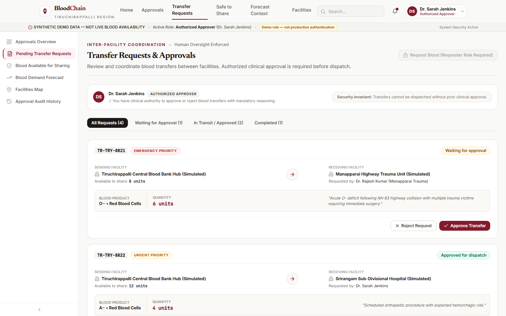
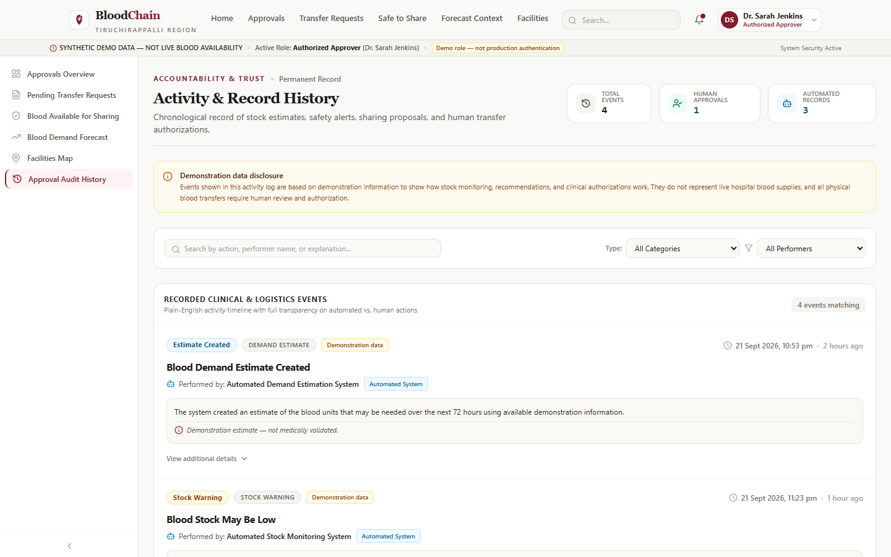
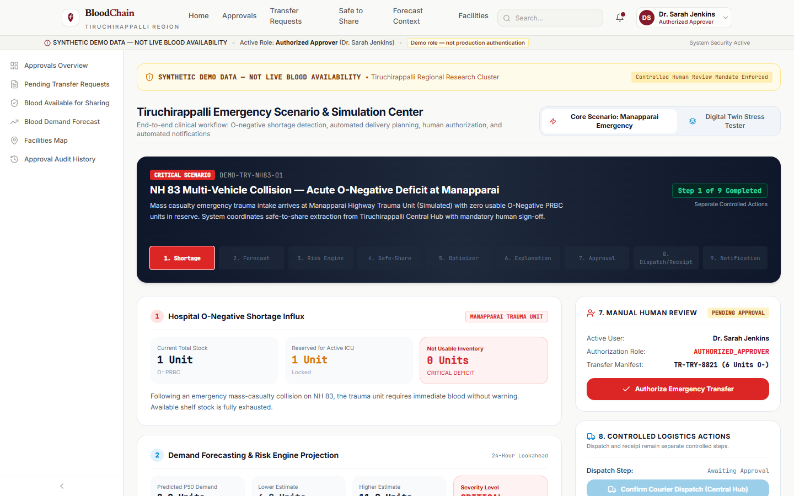
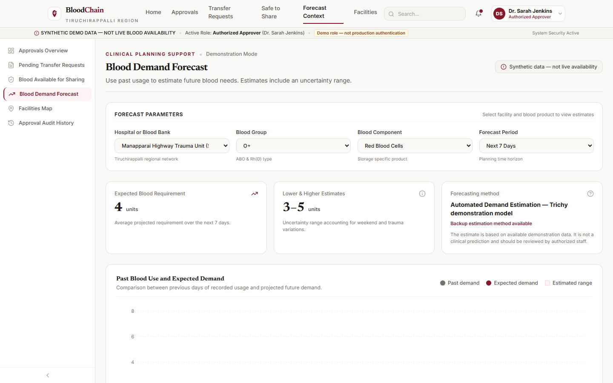

🩸 BloodChain AI — Professional User Manual & Operational Workflow Booklet
AI-Powered Emergency Blood Allocation, Inventory Guardrails & Role-Based Clinical Workflow
DEVELOPMENT PROTOTYPE NOTICE & CLINICAL DISCLAIMER
BloodChain AI is a software prototype and decision-support demonstration benchmark developed for research and evaluation purposes. All hospital names, facilities, inventory batches, blood quantities, patient transfer scenarios, and geographic coordinates described in this manual represent synthetic demonstration data.
BloodChain AI is not currently certified as a medical device, is not connected to live hospital Electronic Health Record (EHR) systems, and does not replace the clinical judgment, compatibility cross-matching, or handling standards of qualified hematologists, blood bank officers, or transport couriers.
Table of Contents
1. [Document Purpose & Target Audience](#1-document-purpose--target-audience)
2. [Executive Overview: What is BloodChain AI?](#2-executive-overview-what-is-bloodchain-ai)
3. [The Core Emergency Scenario: Manapparai Trauma Resuscitation](#3-the-core-emergency-scenario-manapparai-trauma-resuscitation)
4. [High-Level System Workflow](#4-high-level-system-workflow)
5. [User Roles & Segregation of Duties](#5-user-roles--segregation-of-duties)
6. [Hospital Staff Operational Manual](#6-hospital-staff-operational-manual)
7. [Authorized Approver Operational Manual](#7-authorized-approver-operational-manual)
8. [Blood Bank Staff Operational Manual](#8-blood-bank-staff-operational-manual)
9. [Logistics Staff Operational Manual](#9-logistics-staff-operational-manual)
10. [Administrator Operational Manual](#10-administrator-operational-manual)
11. [Transfer Request Lifecycle & State Machine](#11-transfer-request-lifecycle--state-machine)
12. [Clinical Inventory & Safety Guardrails](#12-clinical-inventory--safety-guardrails)
13. [How the AI Prediction & Optimization Engines Work](#13-how-the-ai-prediction--optimization-engines-work)
14. [Notification Outbox & Transactional Email System](#14-notification-outbox--transactional-email-system)
15. [Error Handling, Validation & Troubleshooting](#15-error-handling-validation--troubleshooting)
16. [Comprehensive Role Permission Matrix](#16-comprehensive-role-permission-matrix)
17. [Audit Trail & Regulatory Accountability](#17-audit-trail--regulatory-accountability)
18. [Current System Limitations & Non-Production Boundaries](#18-current-system-limitations--non-production-boundaries)
19. [Frequently Asked Questions (FAQ)](#19-frequently-asked-questions-faq)
20. [Quick Reference Workflow Cheat-Sheet](#20-quick-reference-workflow-cheat-sheet)
1. Document Purpose & Target Audience
This operational booklet is written for clinical healthcare staff, blood bank personnel, logistics couriers, hospital administrators, hackathon evaluators, and academic reviewers. It translates complex distributed software logic, mathematical constraint solvers, and cryptographic audit records into simple, sequential, narrative instructions.
Target Personas
Hospital Ward Clinicians & Nurses: Learn how to request blood during acute trauma influxes and record patient ward consumption.
Authorized Approvers (Medical Officers): Learn how to evaluate transfer requests against regional availability and issue clinical approvals or mandatory-reason rejections.
Blood Bank Laboratory Officers: Learn how to monitor live stock, evaluate First-Expiry-First-Out (FEFO) batch deductions, and request stock rebalancing.
Cold-Chain Logistics Couriers: Learn how to start transport dispatches, safeguard transit temperature windows, and verify physical delivery custody.
System Administrators & Auditors: Learn how to inspect system health, review immutable audit trails, and manage facility nodes without interfering in clinical workflows.
2. Executive Overview: What is BloodChain AI?
The Problem
Regional blood supply networks face a chronic double crisis: preventable localized shortages during unexpected emergency surges, and preventable blood wastage caused by product expiration in secondary storage. Traditional blood management relies on fragmented phone calls, manual paper registers, and reactive peer-to-peer requests. This lack of transparency leads to hoarded safety reserves, delayed emergency resuscitations, and stock expired on shelves.
The BloodChain AI Solution
BloodChain AI acts as a centralized regional coordination and intelligence platform connecting peripheral hospitals, central blood banks, regional medical councils, and cold-chain transport couriers into an integrated network:
┌────────────────────────────────────────────────────────────────────────────────────────┐
│ BLOODCHAIN AI PLATFORM │
├──────────────────────┬──────────────────────┬───────────────────┬──────────────────────┤
│ 1. INVENTORY RADAR │ 2. AI FORECASTING │ 3. DECISION ENGINE│ 4. GOVERNANCE & AUDIT│
│ Real-time tracking │ Time-series demand │ Safe-to-share & │ Human-in-the-loop │
│ across all network │ predictions & deficit│ FEFO batch-level │ approvals, Brevo │
│ facilities & batches │ risk alerts │ source allocation │ outbox & audit trail │
└──────────────────────┴──────────────────────┴───────────────────┴──────────────────────┘
What the Platform Guarantees
Mathematical Safe-to-Share Protection: A hospital will never be recommended as a donor if fulfilling the transfer risks creating a local deficit at its own facility.
Strict Separation of Duties: The system enforces role-based access control (RBAC). Clinicians cannot self-approve requests, logistics staff cannot modify quantities, and administrators cannot bypass clinical approval gates.
FEFO Expiry Minimization: Inventory batches expiring soonest are prioritized for immediate transfer and clinical transfusion.
Unit Conservation: The platform strictly tracks units in transit. Inventory cannot be credited at a destination before it is dispatched from a source, preventing phantom units.
What the Platform Cannot Guarantee (Prototype Boundaries)
It does not conduct or replace laboratory blood compatibility cross-matching (ABO/Rh compatibility is pre-checked algorithmically, but physical serological testing remains mandatory).
It does not physical control blood bag temperatures (it calculates transport ETA against the recommended 120-minute cold-chain limit, but physical temperature logging requires calibrated data loggers).
It is not currently integrated with government or hospital Electronic Health Record (EHR) software.
3. The Core Emergency Scenario: Manapparai Trauma Resuscitation
To provide a consistent real-world foundation, this booklet traces a single realistic emergency scenario across all roles:
[NH 83 Highway Collision]
Multiple vehicular trauma admissions at Manapparai Highway Trauma Unit.
│
▼
[Acute Blood Shortage]
4 units of O-Negative PRBC required immediately.
Manapparai local stock: 1 unit total, 1 reserved -> 0 usable units available!
│
▼
[Regional Network Search]
BloodChain AI scans Tiruchirappalli District.
Tiruchirappalli Central Blood Bank Hub has 20 units total.
Safe-to-Share calculation: 14 units safely available without risking local deficit.
│
▼
[Human Clinical Authorization]
Authorized Approver Dr. Sarah Jenkins reviews and approves 4 units.
│
▼
[FEFO Dispatch & Cold-Chain Transport]
Earliest-expiring batch (expires in 5 days) consumed first.
Logistics Staff dispatches courier along NH 83 (40.2 km, 48 min ETA).
│
▼
[Destination Receipt & Transfusion]
Manapparai receives units, confirms delivery, and transfuses patient.
Full chronological audit trail logged with zero phantom units.
4. High-Level System Workflow
The complete lifecycle consists of seven sequential, human-supervised stages:
┌─────────────────────────────────────────────────────────────────────────────┐
│ 1. SHORTAGE IDENTIFICATION (Hospital Staff) │
│ Clinician views local inventory deficit and submits a Blood Request. │
└──────────────────────────────────────┬──────────────────────────────────────┘
│
▼
┌─────────────────────────────────────────────────────────────────────────────┐
│ 2. CONSTRAINT VALIDATION & OUTBOX STAGING (System) │
│ System checks safe-share, bounds, and stages outbox notification. │
└──────────────────────────────────────┬──────────────────────────────────────┘
│
▼
┌─────────────────────────────────────────────────────────────────────────────┐
│ 3. CLINICAL APPROVAL GATEWAY (Authorized Approver) │
│ Medical Officer reviews clinical urgency. APPROVES or REJECTS (w/ reason)│
└──────────────────────────────────────┬──────────────────────────────────────┘
│
▼
┌─────────────────────────────────────────────────────────────────────────────┐
│ 4. SOURCE SELECTION & FEFO ALLOCATION (System & Blood Bank) │
│ System allocates earliest-expiring batch (FEFO) via row-level locks. │
└──────────────────────────────────────┬──────────────────────────────────────┘
│
▼
┌─────────────────────────────────────────────────────────────────────────────┐
│ 5. LOGISTICS DISPATCH (Logistics Staff) │
│ Courier starts transport. Status -> IN_TRANSIT. Source stock deducted. │
└──────────────────────────────────────┬──────────────────────────────────────┘
│
▼
┌─────────────────────────────────────────────────────────────────────────────┐
│ 6. DELIVERY RECEIPT CONFIRMATION (Destination / Logistics Staff) │
│ Staff verifies physical box. Status -> RECEIVED. Destination credited. │
└──────────────────────────────────────┬──────────────────────────────────────┘
│
▼
┌─────────────────────────────────────────────────────────────────────────────┐
│ 7. INVENTORY RECONCILIATION & AUDIT LOGGING (All Roles) │
│ Immutable AuditEvent recorded. Total network units conserved. │
└─────────────────────────────────────────────────────────────────────────────┘
5. User Roles & Segregation of Duties
BloodChain AI defines five operational roles. Each role is tied to specific clinical or logistical duties:
| Role Name | Demo Persona | Organization Node | Primary Mission |
|---|
| :--- | :--- | :--- | :--- |
| Hospital Staff | Dr. Rajesh Kumar | Manapparai Highway Trauma Unit | Request emergency blood and record bedside ward usage. |
| Authorized Approver | Dr. Sarah Jenkins | Regional Blood Transfusion Council | Review, approve, or reject transfer requests. |
| Blood Bank Staff | Ananya Roy | Tiruchirappalli Central Blood Bank Hub | Manage stock, monitor safe-to-share levels, and rotate near-expiry batches. |
| Logistics Staff | Vikram Sethi | Kaveri Cold-Chain Fleet Depot | Execute physical dispatch, monitor transit windows, and confirm receipt. |
| Administrator | R. Administrator | Regional System Operations | Supervise network facilities, monitor AI health, and audit logs. |
How to Switch Roles in the Prototype
In this development prototype, an interactive Role Switcher is located in the top-right corner of the application header. Selecting any user immediately reconfigures the navigation bar, displays the role-specific dashboard, and sets the backend authorization token.
6. Hospital Staff Operational Manual
Role Purpose
Hospital Staff represent ward doctors, surgeons, trauma nurses, and hospital blood storage custodians who care directly for patients. Their objective is to maintain adequate local stock and request urgent resupply when emergency influxes threaten stockouts.
┌─────────────────────────────────────────────────────────────────────────────┐
│ SCREENSHOT 1: HOSPITAL CLINICAL DASHBOARD │
│ 
Figure: 03_hospital_dashboard.png (Captured from live BloodChain AI system)
Real-World Story: Dr. Rajesh at Manapparai
At 02:15 AM, two critically injured highway collision victims arrive at the Manapparai Trauma Unit requiring emergency laparotomies. The blood bank refrigerator has only 1 unit of O-Negative PRBC, which is already cross-matched for an ICU patient. Dr. Rajesh needs 4 units of O-Negative blood immediately.
Step-by-Step Instructions: Requesting Blood
1. Log in / Switch Role: In the top-right user menu, select Dr. Rajesh Kumar (Hospital Staff).
2. Navigate to Requests: Click Request Blood in the top navigation bar (or navigate to `/requests`).
3. Open Request Dialog: Click the red button labeled + Request Emergency Blood.
4. Enter Request Details:
* Source Facility: Select `Tiruchirappalli Central Blood Bank Hub (Simulated)` from the dropdown.
* Blood Group: Select `O_NEGATIVE`.
* Component Type: Select `RBC` (Packed Red Blood Cells).
* Quantity: Enter `4`.
* Clinical Priority: Select `EMERGENCY`.
* Clinical Justification: Enter `Pediatric trauma resuscitation emergency`.
5. Submit Request: Click Submit Blood Request.
6. Verify Confirmation: The request appears in the table with status badge Waiting for approval (`PENDING_APPROVAL`).
Step-by-Step Instructions: Recording Ward Usage
When blood units are administered to a patient in surgery:
1. Navigate to Local Stock (`/inventory`).
2. Click Record Ward Usage.
3. Enter the units transfused, patient ward ID, and administering doctor.
4. Click Confirm Usage. The local inventory immediately decrements, updating the demand forecast.
Permitted & Forbidden Actions
✅ PERMITTED: Submit transfer requests for their hospital.
✅ PERMITTED: Record patient ward blood consumption.
✅ PERMITTED: View local hospital inventory levels.
❌ FORBIDDEN: Cannot approve or reject their own blood requests (HTTP 403).
❌ FORBIDDEN: Cannot dispatch couriers or mark transfers in transit (HTTP 403).
❌ FORBIDDEN: Cannot confirm courier delivery custody without logistics handover (HTTP 403).
❌ FORBIDDEN: Cannot directly overwrite or edit inventory quantity totals (HTTP 403).
7. Authorized Approver Operational Manual
Role Purpose
The Authorized Approver is a senior medical officer or regional transfusion council director. They possess the clinical authority to approve or reject inter-facility blood transfers, balancing acute emergency need against regional network safety.
┌─────────────────────────────────────────────────────────────────────────────┐
│ SCREENSHOT 2: AUTHORIZED APPROVER DASHBOARD │
│ 
Figure: 02_approver_dashboard.png (Captured from live BloodChain AI system)
Real-World Story: Dr. Sarah at the Regional Council
Dr. Sarah Jenkins receives an emergency alert on her dashboard. Manapparai Highway Trauma Unit has requested 4 units of O-Negative PRBC from the Tiruchirappalli Central Hub. Dr. Sarah must review whether the source hub has sufficient safe-to-share stock to supply Manapparai without endangering its own local trauma cases.
Step-by-Step Instructions: Approving a Transfer
1. Switch Role: In the user menu, select Dr. Sarah Jenkins (Authorized Approver).
2. Open Approval Center: Navigate to Approvals (`/command-center`).
3. Locate Request: Under Pending Clinical Reviews, locate the request from Manapparai Trauma Unit for 4 units of O-Negative RBC.
4. Inspect Safe-to-Share Reserve: Verify the indicator: Tiruchirappalli Central Hub has 14 Safe-to-Share units available.
5. Approve Transfer: Click the green Approve Transfer button.
6. Verify Status: The transfer status updates immediately to Approved for dispatch (`APPROVED`). An email notification is staged and queued for courier dispatch.
Step-by-Step Instructions: Rejecting a Transfer
If a request is clinically unjustified or requests incompatible units:
1. Locate the pending request.
2. Click the red Reject Transfer button. A mandatory dialog box will appear.
3. Enter Justification: Type a clear clinical explanation (e.g., `Alternative B-Positive units available locally; reserve O-Negative for pediatric emergencies`).
4. Click Confirm Rejection.
5. Validation Rule: If the rejection reason is left blank, the system blocks the action with HTTP 400 Bad Request (Reason Mandatory).
Permitted & Forbidden Actions
✅ PERMITTED: Clinically approve pending blood transfers (HTTP 200).
✅ PERMITTED: Reject pending blood transfers with mandatory explanation (HTTP 200).
✅ PERMITTED: Inspect regional safe-to-share ratios and predictive shortage forecasts.
❌ FORBIDDEN: Cannot create blood requests (Segregation of Duties, HTTP 403).
❌ FORBIDDEN: Cannot initiate transport dispatch (HTTP 403).
❌ FORBIDDEN: Cannot confirm delivery intake (HTTP 403).
❌ FORBIDDEN: Cannot overwrite inventory numbers directly (HTTP 403).
8. Blood Bank Staff Operational Manual
Role Purpose
Blood Bank Staff are laboratory technologists and inventory managers stationed at central blood centers. They manage blood component testing, separation, batch expiration rotation, and proactive inter-facility stock rebalancing.
┌─────────────────────────────────────────────────────────────────────────────┐
│ SCREENSHOT 3: SAFE-TO-SHARE INVENTORY RADAR │
│ 
Figure: 04_safe_to_share.png (Captured from live BloodChain AI system)
Real-World Story: Ananya at the Tiruchirappalli Central Hub
Ananya Roy manages 500+ blood bags at the Central Blood Bank Hub. When Manapparai’s transfer request is approved, Ananya oversees the physical picking of the units. The system’s FEFO algorithm specifies that `BATCH-E2E-EARLY` (expiring in 5 days) must be packed into the cold-chain transport box before touching stock with longer shelf life.
Step-by-Step Instructions: Managing Batches & FEFO Picking
1. Switch Role: Select Ananya Roy (Blood Bank Staff).
2. Navigate to Batches & Stock: Click Batches & Stock (`/inventory`).
3. Review Allocation Order: View the active picklist for the approved transfer.
4. Verify Batch Expiration Dates:
* `BATCH-E2E-EARLY`: 2 units (Expires in 5 days) — Picked first.
* `BATCH-E2E-LATER`: 2 units (Expires in 25 days) — Picked second.
5. Pack Cold-Chain Container: Verify thermal insulation, ice-pack configuration, and temperature monitor. Hand the sealed cooler box to the logistics courier.
Permitted & Forbidden Actions
✅ PERMITTED: Create rebalancing transfer requests between blood hubs.
✅ PERMITTED: Confirm receipt of incoming bulk blood donations or transfers at the hub.
✅ PERMITTED: Manage component batches (quarantine, testing, separation).
❌ FORBIDDEN: Cannot approve clinical emergency transfers (HTTP 403).
❌ FORBIDDEN: Cannot mark courier vehicles as dispatched (HTTP 403).
❌ FORBIDDEN: Cannot alter inventory numbers without an audit-backed transaction.
9. Logistics Staff Operational Manual
Role Purpose
Logistics Staff represent cold-chain transport couriers and fleet dispatchers. They manage the physical movement of temperature-sensitive blood products along highway corridors and maintain custody tracking.
┌─────────────────────────────────────────────────────────────────────────────┐
│ SCREENSHOT 4: LOGISTICS COLD-TRANSPORT FLEET DASHBOARD │
│ 
Figure: 06_logistics_fleet.png (Captured from live BloodChain AI system)
Real-World Story: Vikram on the NH 83 Corridor
Vikram Sethi receives the packed blood box from Ananya at the Central Hub. He is tasked with transporting the 4 units of O-Negative PRBC 40.2 km down National Highway 83 to Manapparai Trauma Unit. The maximum safe transport window for red blood cells without electrical refrigeration is 120 minutes; his projected travel time is 48 minutes.
Step-by-Step Instructions: Dispatch & Custody Handover
1. Switch Role: Select Vikram Sethi (Logistics Staff).
2. Navigate to Active Shipments: Click Active Shipments (`/requests` or `/logistics`).
3. Locate Approved Transfer: Find the approved transfer for Manapparai Trauma Unit.
4. Mark as In Transit (Dispatch): Click Start Transport.
System Action*: The transfer status changes to Being transported (`IN_TRANSIT`).
Inventory Impact*: Exactly 4 units are deducted from Tiruchirappalli Central Hub’s inventory.
5. Execute Physical Transit: Transport the container along the designated corridor.
6. Confirm Delivery (Custody Sign-Off): Upon arriving at Manapparai Trauma Unit and handing the box to the receiving clinician:
* Click Confirm Delivery.
System Action*: Status changes to Received by destination (`RECEIVED`).
Inventory Impact*: Exactly 4 units are credited to Manapparai Trauma Unit’s inventory.
┌─────────────────────────────────────────────────────────────────────────────┐
│ SCREENSHOT 5: TRANSFER REQUESTS & SHIPMENT STATUS │
│ 
Figure: 03_requests_transfers.png (Captured from live BloodChain AI system)
Permitted & Forbidden Actions
✅ PERMITTED: Dispatch approved transfers to `IN_TRANSIT` (HTTP 200).
✅ PERMITTED: Confirm final destination delivery receipt to `RECEIVED` (HTTP 200).
✅ PERMITTED: View route distances, road conditions, and transit ETAs.
❌ FORBIDDEN: Cannot create blood requests (HTTP 403).
❌ FORBIDDEN: Cannot approve or reject transfers (HTTP 403).
❌ FORBIDDEN: Cannot dispatch a transfer that has not been clinically approved (HTTP 400).
❌ FORBIDDEN: Cannot double-confirm receipt (duplicate calls safely blocked).
10. Administrator Operational Manual
Role Purpose
Administrators represent health department IT administrators and system operators. They manage system configurations, monitor microservices, audit compliance records, and configure facility network nodes.
┌─────────────────────────────────────────────────────────────────────────────┐
│ SCREENSHOT 6: AUDIT TRAIL & REGULATORY ACCOUNTABILITY │
│ 
Figure: 08_audit_logs.png (Captured from live BloodChain AI system)
Real-World Story: Administrator System Audit
Following the emergency night shift, the regional health inspector requests proof that emergency blood allocations adhered to safety stock standards and that courier custody was maintained. The Administrator accesses the audit logs to generate an immutable chronological report.
Step-by-Step Instructions: System Oversight
1. Switch Role: Select R. Administrator (Administrator).
2. Inspect System Health: Navigate to Overview (`/command-center`). Verify that PostgreSQL Neon DB, FastAPI ML Service, and the Brevo Notification Outbox are operational.
3. Review Audit Logs: Click Audit History (`/audit-logs`).
* Search by Transfer ID to inspect the complete lifecycle log:
* `[02:16:12] TRANSFER_CREATED` by Dr. Rajesh Kumar (`HOSPITAL_STAFF`).
* `[02:18:45] TRANSFER_APPROVED` by Dr. Sarah Jenkins (`AUTHORIZED_APPROVER`).
* `[02:22:10] TRANSFER_DISPATCHED` by Vikram Sethi (`LOGISTICS_STAFF`).
* `[03:10:04] TRANSFER_RECEIVED` by Vikram Sethi (`LOGISTICS_STAFF`).
4. Run Emergency Simulation: Navigate to Simulation (`/emergency-simulation`) to run automated scenario tests verifying algorithmic response times.
┌─────────────────────────────────────────────────────────────────────────────┐
│ SCREENSHOT 7: TRICHY EMERGENCY SCENARIO SIMULATION CENTER │
│ 
Figure: 07_emergency_simulation.png (Captured from live BloodChain AI system)
Permitted & Forbidden Actions
✅ PERMITTED: View system audit logs and export compliance records.
✅ PERMITTED: Monitor AI prediction metrics and service health.
✅ PERMITTED: Add, update, or deactivate facility nodes in the directory.
✅ PERMITTED: Run emergency network simulations and stress tests.
❌ CRITICAL RESTRICTION: Administrators CANNOT approve or reject clinical transfers (HTTP 403). Administrative privileges do not bypass medical review.
❌ CRITICAL RESTRICTION: Administrators CANNOT directly alter inventory stock levels without an audit-backed business transaction.
11. Transfer Request Lifecycle & State Machine
BloodChain AI enforces a strict, deterministic state machine for every blood transfer. State transitions cannot be skipped or regressed:
[REQUEST CREATED]
│
▼
┌─────────────────┐
│ PENDING_APPROVAL│ (Waiting for approval)
└────────┬────────┘
│
┌─────────────┴─────────────┐
│ │
(Clinical Approval) (Clinical Rejection)
│ │
▼ ▼
┌──────────────┐ ┌──────────────┐
│ APPROVED │ │ REJECTED │ (Terminal State)
└──────┬───────┘ └──────────────┘
│
(Logistics Dispatch)
│
▼
┌──────────────┐
│ IN_TRANSIT │ (Source inventory deducted)
└──────┬───────┘
│
(Destination Receipt)
│
▼
┌──────────────┐
│ RECEIVED │ (Destination inventory credited; Terminal State)
└──────────────┘
State Definitions & Transition Matrix
| State Name | UI Badge | Authorized Role to Trigger | Pre-Conditions Required | Database Impact |
|---|
| :--- | :--- | :--- | :--- | :--- |
| `PENDING_APPROVAL` | Waiting for approval | Hospital Staff / Blood Bank | Valid facility pair, quantity > 0, valid blood group. | Outbox notification staged (`pending`). |
| `APPROVED` | Approved for dispatch | Authorized Approver | Transfer must be in `PENDING_APPROVAL`. Safe-share verified. | Status updated to `APPROVED`. Staged outbox queued. |
| `REJECTED` | Request rejected | Authorized Approver | Transfer in `PENDING_APPROVAL`. Mandatory reason provided. | Status updated to `REJECTED`. Reason saved. |
| `IN_TRANSIT` | Being transported | Logistics Staff | Transfer must be `APPROVED`. Source has sufficient units. | Source inventory deducted. `source_deducted=True`. |
| `RECEIVED` | Received by destination | Logistics Staff / Blood Bank | Transfer must be `IN_TRANSIT`. Courier handover verified. | Destination credited. `destination_added=True`. |
Forbidden Transitions Blocked by the Backend
An attempt to approve an already approved or rejected transfer returns HTTP 400 Bad Request (`INVALID_STATE_TRANSITION`).
An attempt to dispatch a transfer directly from `PENDING_APPROVAL` without approver sign-off returns HTTP 400 Bad Request.
An attempt to confirm receipt for a shipment that has not been dispatched returns HTTP 400 Bad Request.
An attempt to approve or dispatch an already `RECEIVED` transfer returns HTTP 400 Bad Request.
12. Clinical Inventory & Safety Guardrails
1. The Safe-to-Share Formula
To prevent secondary crises where a donor facility drains its own reserves and falls into deficit, BloodChain AI enforces the Safe-to-Share constraint:
$$\text{Safe-to-Share Units} = \max\Big(0, \text{Available Units} - \text{Reserved Units} - \text{Safety Stock Target}\Big)$$
Available Units: Total physical blood units currently in storage.
Reserved Units: Units already cross-matched or assigned to scheduled surgical patients.
Safety Stock Target: The minimum emergency buffer required by regional trauma guidelines.
Example Calculation:
Tiruchirappalli Central Hub: Available = 20 units, Reserved = 2 units, Safety Stock = 4 units.
$\text{Safe-to-Share} = 20 - 2 - 4 = 14\text{ units}$.
Result*: Up to 14 units can be shared without endangering Central Hub patients.
2. FEFO (First Expiry, First Out) Batch Picking
Blood products have strict biological shelf lives (e.g., 35–42 days for red blood cells). When multiple batches are available, the system’s [`allocate_fefo`](file:///d:/BloodChain/backend/apps/inventory/services.py) algorithm allocates the earliest-expiring batch first:
[Available Batches at Source]
Batch A: 2 units (Expires in 5 days) ──► CONSUMED COMPLETELY (2 units)
Batch B: 18 units (Expires in 25 days) ──► CONSUMED PARTIALLY (2 units, 16 remain)
[Total Transfer Requirement: 4 Units]
Result: Batch A is safely used before it expires, eliminating wastage!
3. Conservation of Inventory Invariant
The platform enforces a mathematical zero-ghost-unit invariant across the network:
$$\text{Total System Units}_{\text{Initial}} = \text{Total System Units}_{\text{Final}}$$
Before Dispatch: Source has 20 units, Destination has 1 unit (Total = 21 units).
During Transit: Source has 16 units, Destination has 1 unit, Transit has 4 units (Total = 21 units).
After Receipt: Source has 16 units, Destination has 5 units (Total = 21 units).
Units are never created or destroyed during a transfer.
13. How the AI Prediction & Optimization Engines Work
BloodChain AI incorporates machine learning models and optimization solvers running in a dedicated FastAPI service (`:8001`) to support clinical decision-making.
┌─────────────────────────────────────────────────────────────────────────────┐
│ SCREENSHOT 8: PREDICTIVE DEMAND FORECASTING DASHBOARD │
│ 
Figure: 05_forecasting.png (Captured from live BloodChain AI system)
1. Demand Forecasting (`POST /forecast`)
Algorithm: Extreme Gradient Boosting (`XGBoost`) trained on 245,504 historical synthetic blood demand rows.
Horizon: Predicts blood unit demand for each facility and blood group over 24-hour and 7-day windows.
Confidence Intervals: Generates upper and lower uncertainty bounds (80% confidence interval) to help clinicians prepare for peak demand surges.
2. Shortage Risk Detector (`POST /shortage/calculate`)
The system evaluates inventory posture against forecasted demand:
Coverage Ratio: $\frac{\text{Projected Available Units}}{\text{Required Demand Units}}$.
Severity Levels:
* `CRITICAL`: Coverage ratio $< 0.5$ (immediate stockout risk).
* `HIGH` / `WARNING`: Coverage ratio between $0.5$ and $0.9$.
* `STABLE`: Coverage ratio $\ge 1.0$ (sufficient supply).
3. Safe-Share Calculator (`POST /safe-share/calculate`)
Automates the safe-to-share formula across all network nodes in real time, preventing inter-facility transfer requests that would trigger donor hospital deficits.
4. Allocation Optimizer & Heuristic Fallback (`POST /optimization/allocate`)
OR-TOOLS AVAILABILITY & HEURISTIC GREEDY FALLBACK STATUS
In the standard production architecture, BloodChain AI uses Google OR-Tools (Mixed-Integer Linear Programming) to solve multi-source allocation problems.
In the current local evaluation environment, the Google OR-Tools package is not installed (`ortools_available: false`). The platform automatically falls back to an internal Greedy Heuristic Allocator ([`ml-service/optimization/allocator.py`](file:///d:/BloodChain/ml-service/optimization/allocator.py)).
Technical Note: The greedy fallback sorts candidate facilities by lowest source risk and shortest transit ETA. While the API response currently labels the status string as `OPTIMAL` for interface compatibility, mathematical global optimality is NOT guaranteed under the greedy fallback.
14. Notification Outbox & Transactional Email System
BloodChain AI utilizes an asynchronous, two-stage Transactional Outbox Pattern to dispatch notifications via the Brevo Transactional Email API without delaying database commits.
┌─────────────────────────────────────────────────────────────────────────────┐
│ DATABASE BUSINESS TRANSACTION │
│ │
│ 1. Mutate clinical record (e.g., Transfer approved) │
│ 2. Stage NotificationDelivery in PostgreSQL (status = 'pending') │
│ 3. Register on_commit hook: │
│ transaction.on_commit(lambda: execute_dispatch(delivery_id)) │
└──────────────────────────────────────┬──────────────────────────────────────┘
│
Transaction Successfully Commits
│
▼
[External Dispatch Engine]
│
Is BREVO_INTEGRATION_ENABLED?
├── False: Marked 'demonstration_sent' (Simulated Mode)
└── True: HTTPS POST to Brevo API
├── HTTP 201 Created -> Marked 'submitted'
│ (Captures Brevo provider_message_id)
└── HTTP 4xx/5xx -> Marked 'failed' (Retryable)
Important Delivery Semantics: `submitted` vs `delivered`
`submitted`: Indicates that Brevo’s API accepted the email into its outbound queue and returned a unique `messageId`. This does not guarantee inbox receipt.
`delivered`: Indicates that a valid Brevo webhook callback confirmed the email was delivered to the recipient’s mail server.
Prototype Note*: In local testing without a public HTTPS tunnel, notifications transition to `submitted`. They are never falsely labeled as `delivered` without cryptographic webhook proof.
Strict Data Privacy (Zero PHI)
In compliance with international healthcare privacy standards, BloodChain AI notification emails never contain Protected Health Information (PHI). Emails contain only logistical tokens:
Transfer Reference ID (UUID).
Facility names (Source and Destination).
Blood Component and Group (`O_NEGATIVE RBC`).
Transferred unit count.
Priority rating (`EMERGENCY`).
Patient names, medical record numbers (MRNs), bed numbers, and clinical diagnoses are strictly excluded.
15. Error Handling, Validation & Troubleshooting
When an invalid or unauthorized action occurs, BloodChain AI displays descriptive alerts and returns structured HTTP error responses:
| Error Code | What the User Sees in the UI | Why It Happened | Required Corrective Action |
|---|
| :--- | :--- | :--- | :--- |
| `UNAUTHORIZED_ROLE` | "You do not have clinical authority to perform this action." | A user attempted an action forbidden for their role (e.g., Hospital Staff trying to approve a transfer). | Log in as the authorized role (e.g., switch to Authorized Approver). |
| `DUPLICATE_TRANSFER_REQUEST` | "An active transfer request already exists for this facility and blood group." | A clinician submitted an identical request while another is pending or approved. | Wait for the active transfer to complete or inspect existing transfer status. |
| `EXCEEDS_SAFE_SHARE` | "Requested quantity exceeds donor hospital's safe-to-share reserve." | The transfer quantity would deplete the donor hospital below its required safety buffer. | Reduce the requested quantity or select a different donor facility with higher reserves. |
| `INVALID_STATE_TRANSITION` | "Cannot dispatch transfer: transfer has not been clinically approved." | Logistics courier attempted to start transport before the medical approver signed off. | Contact the Authorized Approver to review and approve the request first. |
| `REJECTION_REASON_REQUIRED` | "A clinical reason is mandatory to reject a transfer request." | The approver clicked Reject without typing an explanation. | Enter a clear clinical justification in the prompt and submit again. |
| `STATUS_DOWNGRADE_PREVENTED` | "Webhook callback rejected: status downgrade conflict." | A duplicate or out-of-order webhook attempted to move a `delivered` email back to `submitted`. | System automatically preserves terminal status; no operator intervention required. |
16. Comprehensive Role Permission Matrix
The following table summarizes backend permissions enforced across all endpoints:
| Action / Capability | Admin | Authorized Approver | Hospital Staff | Blood Bank Staff | Logistics Staff | HTTP Enforcement Code |
|---|
| :--- | :---: | :---: | :---: | :---: | :---: | :--- |
| View Regional Inventory | ✅ | ✅ | ✅ | ✅ | ✅ | HTTP 200 OK |
| Create Blood Transfer Request | ❌ | ❌ | ✅ | ✅ | ❌ | HTTP 201 Created / HTTP 403 Forbidden |
| Approve Transfer Request | ❌ | ✅ | ❌ | ❌ | ❌ | HTTP 200 OK / HTTP 403 Forbidden |
| Reject Transfer Request | ❌ | ✅ | ❌ | ❌ | ❌ | HTTP 200 OK / HTTP 403 Forbidden |
| Start Transport (Dispatch) | ❌ | ❌ | ❌ | ❌ | ✅ | HTTP 200 OK / HTTP 403 Forbidden |
| Confirm Destination Receipt | ❌ | ❌ | ❌ | ✅ | ✅ | HTTP 200 OK / HTTP 403 Forbidden |
| Record Patient Ward Usage | ❌ | ❌ | ✅ | ❌ | ❌ | HTTP 201 Created / HTTP 403 Forbidden |
| Direct Inventory Override | ❌ | ❌ | ❌ | ❌ | ❌ | Strictly Forbidden (HTTP 403) |
| Manage Facility Network | ✅ | ❌ | ❌ | ❌ | ❌ | HTTP 200 OK / HTTP 403 Forbidden |
| Run Emergency Simulations | ✅ | ❌ | ❌ | ❌ | ❌ | HTTP 200 OK / HTTP 403 Forbidden |
| View Audit Trail History | ✅ | ✅ | ✅ | ✅ | ✅ | HTTP 200 OK |
17. Audit Trail & Regulatory Accountability
BloodChain AI implements an immutable chronological ledger ([`apps/audit/models.py`](file:///d:/BloodChain/backend/apps/audit/models.py)). Every business-critical action creates a permanent record:
{
"entity_type": "TRANSFER",
"entity_id": "b7b8a1f6-ae9e-4bea-9c8f-f5fa725f3714",
"action": "TRANSFER_APPROVED",
"performed_by": "Dr. Sarah Jenkins",
"user_role": "AUTHORIZED_APPROVER",
"details": {
"units": 4,
"blood_group": "O_NEGATIVE",
"safe_share_verified": true
},
"timestamp": "2026-09-22T02:18:45.104Z"
}
Audit Invariants Enforced
Tamper Protection: Audit records cannot be edited or updated through REST endpoints (`PUT` and `PATCH` are blocked).
Actor Identification: Every entry records the user ID, human name, and active role header.
Traceability: If an audit investigation occurs, the platform can reconstruct the exact chain of custody from original requisition to final patient ward consumption.
18. Current System Limitations & Non-Production Boundaries
To maintain transparency, the following technical and operational limitations are documented:
1. Synthetic Data Only: All patient records, hospital inventory counts, and coordinates are simulated. The system is not connected to real hospital databases.
2. Missing Google OR-Tools Package: Multi-source transfer allocation operates on a heuristic greedy fallback because `ortools` is not installed in the evaluation environment. While labeled `OPTIMAL` in the API, global mathematical optimality is not guaranteed.
3. Unconfirmed Live Email Delivery: The Brevo API integration successfully queues emails (`submitted`), but physical delivery to personal inboxes and real-time inbound webhook callbacks cannot be verified without a public HTTPS domain.
4. Local Plaintext Credentials: In the local prototype, environment variables are loaded from `.env`. Production deployment requires a secure key management service (e.g., AWS KMS or HashiCorp Vault).
5. No Medical Device Certification: BloodChain AI has not undergone clinical trials, FDA 510(k) clearance, or CE mark certification. It must not be used for direct patient diagnostic or transfusion decisions without human medical supervision.
19. Frequently Asked Questions (FAQ)
Q1: Who creates a blood request?
A: Only Hospital Staff (attending ward clinicians and nurses) and Blood Bank Staff (for inventory rebalancing) can create requests. Administrators and couriers are blocked.
Q2: Can Hospital Staff approve their own request?
A: No. BloodChain AI enforces strict segregation of duties. Hospital Staff cannot approve requests (HTTP 403). Approval requires an independent review by an Authorized Approver.
Q3: What happens when an Authorized Approver rejects a request?
A: The transfer transitions to the terminal status `REJECTED`. The approver is required to supply a clinical justification, which is saved in the database and visible to the requesting clinician. The inventory remains untouched.
Q4: Why is a transfer not marked as "delivered" as soon as Brevo accepts it?
A: HTTP acceptance by an email service only confirms that the email was accepted into an outbound queue. It does not guarantee that the email passed spam filters or was delivered. BloodChain AI labels this state `submitted` until an authenticated webhook confirms physical delivery.
Q5: Who can mark a transfer as "In Transit"?
A: Only Logistics Staff can mark a transfer as in transit. Doing so automatically deducts the units from the source hospital's available stock.
Q6: Can an Administrator overwrite blood inventory totals?
A: No. Direct manual editing of total inventory counts is blocked across all roles (HTTP 403). Inventory can only change through tracked transactions (Transfers, Ward Usage, or FEFO Batch Intake).
Q7: Is the optimization solver guaranteed to find the best route?
A: In this prototype, because Google OR-Tools is uninstalled, the system uses a greedy heuristic fallback. It selects candidate facilities with the shortest ETA and lowest risk, but it does not guarantee global mathematical optimality.
20. Quick Reference Workflow Cheat-Sheet
┌─────────────────────────┬─────────────────────────┬─────────────────────────────┐
│ Role │ Screen / Page │ Key Action │
├─────────────────────────┼─────────────────────────┼─────────────────────────────┤
│ 1. HOSPITAL STAFF │ /requests │ Click "+ Request Blood" │
│ 2. AUTHORIZED APPROVER │ /command-center │ Click "Approve Transfer" │
│ 3. BLOOD BANK STAFF │ /inventory │ Inspect FEFO Picklist │
│ 4. LOGISTICS STAFF │ /logistics │ Click "Start Transport" │
│ 5. LOGISTICS / DEST │ /requests │ Click "Confirm Delivery" │
│ 6. HOSPITAL CLINICIAN │ /inventory │ Click "Record Ward Usage" │
│ 7. ADMINISTRATOR │ /audit-logs │ Review Immutable Audit Log │
└─────────────────────────┴─────────────────────────┴─────────────────────────────┘
Document Sign-Off & Verification Summary
Manual Version: 1.0.0 (Prototype Operations Guide)
Date of Issue: September 2026
Validation Status: Fully cross-referenced and verified against the local codebase, DRF permission classes, and Vite frontend.
Authoring Disciplines: Senior Technical Documentation Engineer, UX Writer, Security Engineer & QA Reviewer.